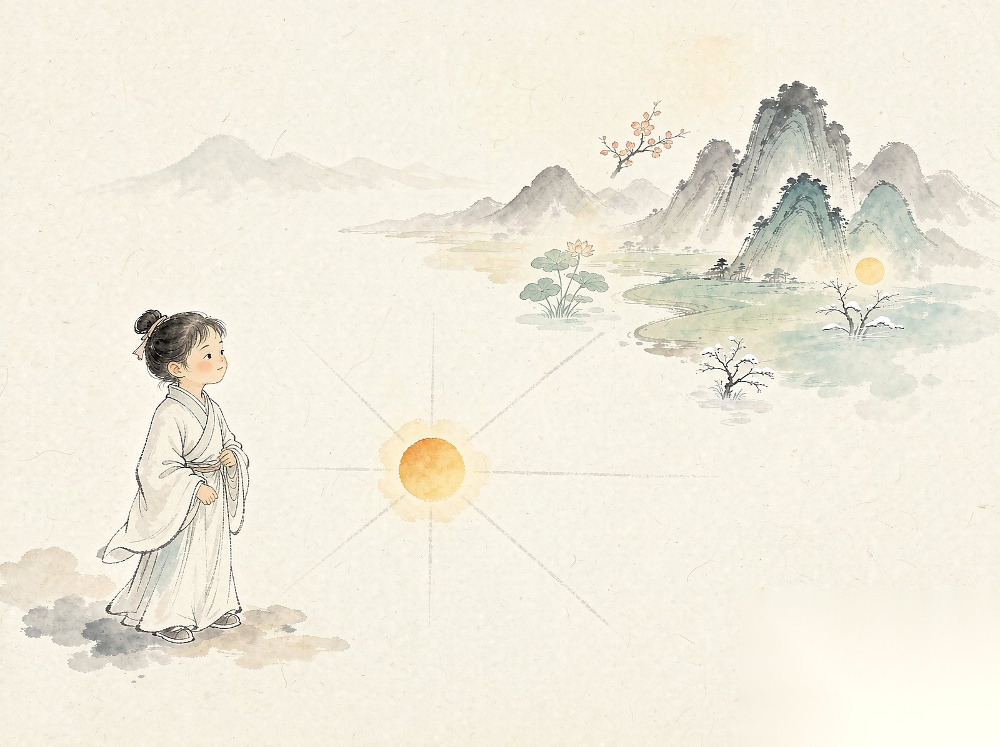

我中华，在东北
前面我们知道赤道之下，日光直照，温热到了极点。
以这个温热的极点作为参照中心来看，我们中华大地，就在它的东北方向。

赤道一带常年酷热，而我们这片土地，有春暖、夏热、秋凉、冬寒，四季分明。
既不像赤道热带长久燥热，也不像极北之地长久严寒，得寒热调和之气。

古人认为，正是这样温凉相济、四时轮转的地气，滋养出华夏这套重视中和、平衡的文明。
方位背后，是气化的差别。过热则生机易焦，过寒则生机难发；我们所处之地，寒热交替、收放循环，天然契合五行生克、四时运转的道理。
落到心上理解：心性修养，也当取这个调和之象，不偏执于大热、大寒两端，守持中和。
一味追求亢奋躁动，或一味枯寂冷淡；以为某一处极点最好，不知调和可贵。
动静、冷热交替均衡，合乎四时运化；知道中和之境，贵在往复平衡。
- 以赤道暖极为参照原点，中华位于它的东北方位。
- 此地四时分明，寒热相济，得气化调和之质。
- 华夏文明崇尚中和，与这片土地的气化特质相互呼应。
- 修身治学，同样以调和不偏为根本。
一、先说清这是相对参照。古人以赤道热带为中心点，所以说中华在东北；这不是现代地图上的方位定义，两套坐标系不同，别拿今天的图去纠古人的错。
二、接到“中”上。上一课讲“中权”和守中，这一课正好落地：我们这片国土的气化，恰好落在寒热之间，是大地这一层的“时中”。
三、承接教与学的二分。家长带孩子理解方位、气候与文明气质的关系，属施教一侧；孩子自己领会中和调和的珍贵，是自主修习。
接上选择力练习：天地区位有定数，人的修为，却是在一切境遇里主动把握中和的分寸。
我中华，在东北
一 · 字义与句读华，文光焕发；中，枢和。全句：我们华夏中华，以赤道暖极为参照原点，区位处在它的东北，得四时寒热调和之气。
前面搭建的天球、赤道黄道、寒热梯度，至此收拢落地，指向我们自身所处的文明根基之地。
二 · 命题考辨勘误重点：极易用现代地图直接判古人方位错了。须知坐标原点一变，方位就变。原文的原点是“赤道下温暖极”这个热带中心，不是地图左下角。
义理核心不在地理考据，而在气化格局：此地不极热、不极寒，四时周流，天然适配阴阳五行、生克制衡这套认知体系，所以华夏格外推崇“中”。
联动般若空杯模型：东南西北皆是相待假名，方位依托参照点而立，没有绝对固定的方位；但在这个观测框架之内，有它稳定的运化秩序。
呼应全书“时中”：大地的时中，就是寒热往复、不滞一极，对应人心的不执两边。
三 · 中西对照华夏古地理观：方位绑定气化与文明德性，土地气质与修心之道贯通。
现代地理学：只做经纬度定位，一般不把地域气候与文明心性直接挂钩。
其他古文明：也有中心国土的观念，但较少把国土方位嵌进一套完整的天象—五行—中和体系。
反向思辨：国土区位只是外缘条件，中和之道是人人可学的心法，不是这片土地独有的专利。
四 · 与前后课的张力次第链条继续延伸：…… → 赤道下，温暖极 → 我中华，在东北
呼应“人不学，不知义”：义的中和，正是效法这片土地寒热相济的气化。
呼应“玉不琢，不成器”：打磨自心，就是效法这种不偏、循环调和的格局。
呼应“教之道，贵以专”：仰观天象、俯察地理，明白我们文明的根基从何处来。
一、方位是相待假名，那么“中和”是地域带来的特质，还是本来普遍的本体之德？
二、四时调和的气化，会不会也有偏颇失衡之时，此时如何守住中和？
三、这套古方位气化模型，在全球化的视野下，应当如何取舍使用？